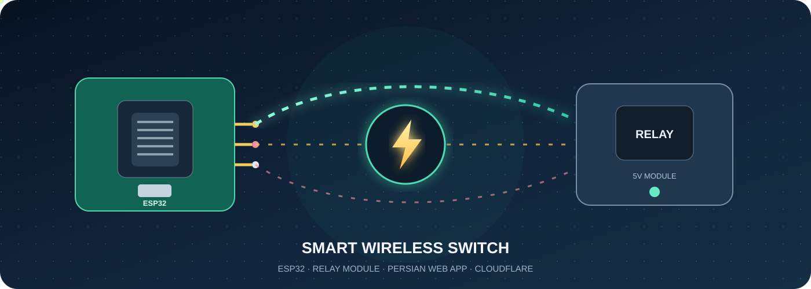

SMART OUTLET
کلید پریز هوشمند

وضعیت پریز
در حال اتصال…
آدرس ESP32 را وارد کن تا شروع کنیم.
تنظیم اتصال
برای کنترل از راه دور، Worker باید از تونل خصوصی و امن به ESP32 برسد. پورت دستگاه را مستقیم روی اینترنت باز نکن.
SMART OUTLET

وضعیت پریز
آدرس ESP32 را وارد کن تا شروع کنیم.
برای کنترل از راه دور، Worker باید از تونل خصوصی و امن به ESP32 برسد. پورت دستگاه را مستقیم روی اینترنت باز نکن.